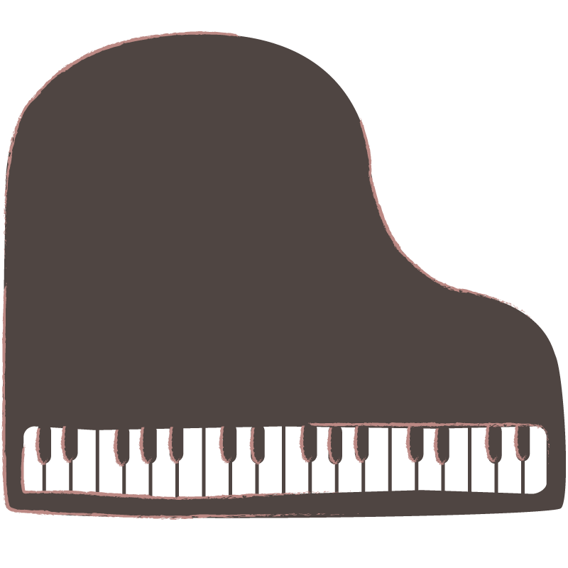

昔から表現することが好きで書道やピアノに熱中して取り組んできました。高校生になってからは集団で何かをしたいという思いからダンス部に入部し、練習を重ねるごとにだんだんと上達して切磋琢磨し合える友人もできました。そして、小学生の頃から興味のあったパソコンについて学べる情報メディア学科に入り、以前から憧れていたプログラミングの授業などを履修してきました。 大学に入ってからはお笑いを見たり美術館に行ったりすることも好きになりました。
習い事のピアノについて
幼稚園の頃から中学校卒業まで習っていて、これまで様々な曲に出会ってきました。その中でも厳選したお気に入りの曲を紹介します。
ショパン『ノクターン8番』
私はどちらかというと長調の曲が好きで、この曲の美しい旋律を聴いているとずっと夢の中にいるようで満たされた気持ちになります。ショパンの曲はどれも清らかで美しくて心が浄化されるような感覚になります。私は他にも前奏曲 第15番の「雨だれ」やエチュード 第5番の「黒鍵」が好きです。
リスト『ため息』
小学校の頃に車のCMで使われていて、いつか弾きたいとずっと憧れていました。そして、中学校の3年生の時の発表会で弾かせてもらえることになって、指を早く動かさないといけない部分や苦手な部分は何度も練習していました。今聴いても美しい旋律にうっとりしてしまいます。
この曲を弾いているピアニストのLang
Langさんの演奏は繊細な部分もあれば力強く弾く所もあって昔から魅力的に感じていて惹きつけられていました。さらに、私が小学生の頃ストーリーや世界観が好きで何度も読み返していた「のだめカンタービレ」という漫画の映画版でLang Lagnさんが主人公の代わりに演奏していました。映画版を観に行きましたが自由奔放な演奏をして周りを魅了する主人公の設定とLang Langさんの演奏が合っていて、映画を通して音楽の素晴らしさに改めて気づいて後から何度も映画で使われていた曲を聴いていたのを覚えています。
好きな音楽について
Vaundy『怪獣の花唄』
私は中学生の頃からバンドの曲を聴いていましたが、Vaundyさんは様々なジャンルの曲を作っていてどの曲も違った良さがあって心に残る所に魅力を感じています。特に「怪獣の花唄」は以前、紅白歌合戦で聴いて勢いがあってそれから一層好きになりました。他にも「おもかげ」や「踊り子」が好きです。MV等もお洒落でセンスが素晴らしいなと思っています。
Snow Man
ドラマ出演しているメンバーや大学院に進学していたメンバー、盛り上げ担当のメンバーなど個性豊かでメンバー同士も仲が良いのでバラエティ番組を見ていても、心が温まって、沢山笑えて時には元気をもらえることもあります。
音楽もノリの良い曲や落ち着いた曲など様々でダンスもキレがあって魅力的なのでこれからも応援し続けたいです。最近はテレビをつけるとSnow Manのメンバーの誰かが出演していることが多くて嬉しく感じていて毎日の楽しみになっています。